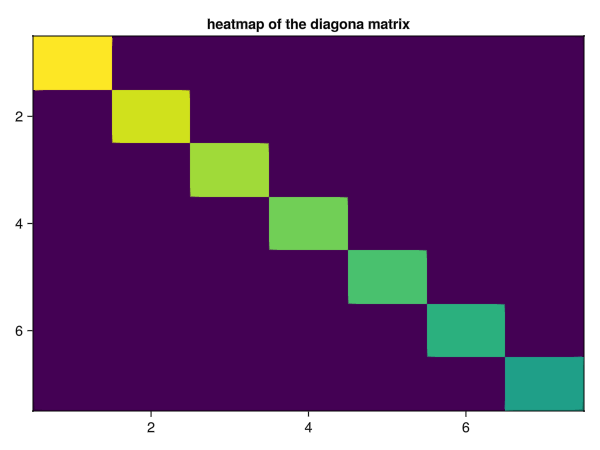
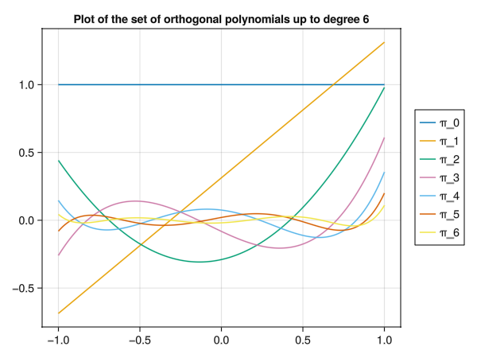
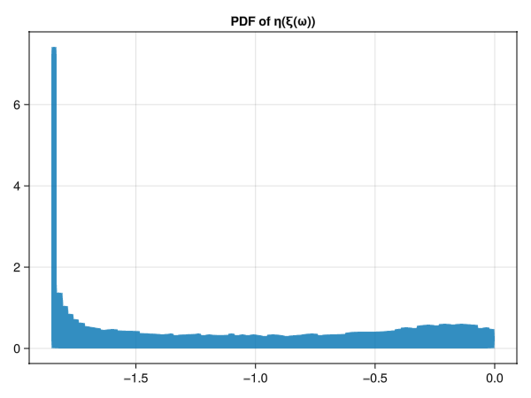
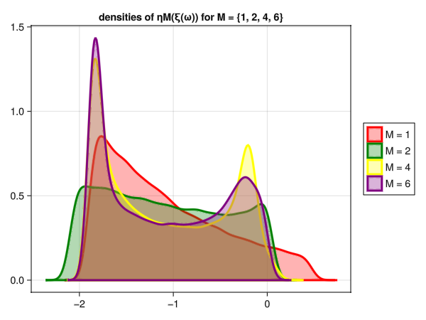
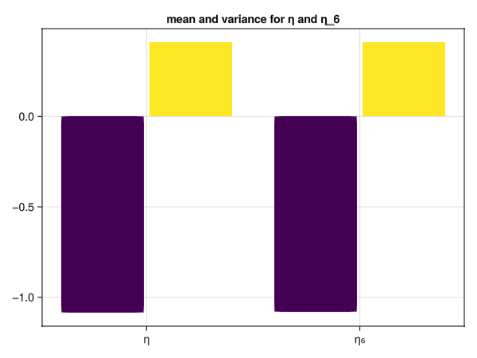
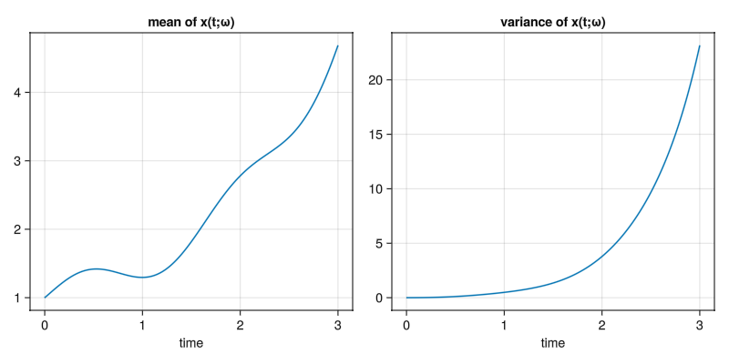
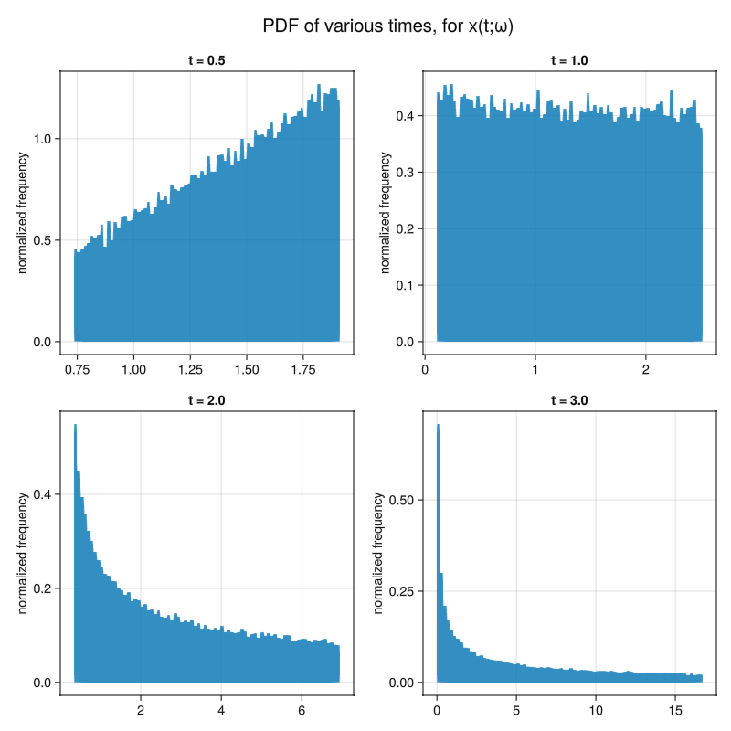
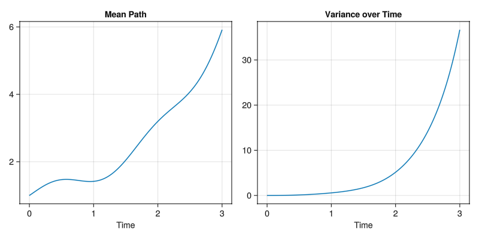
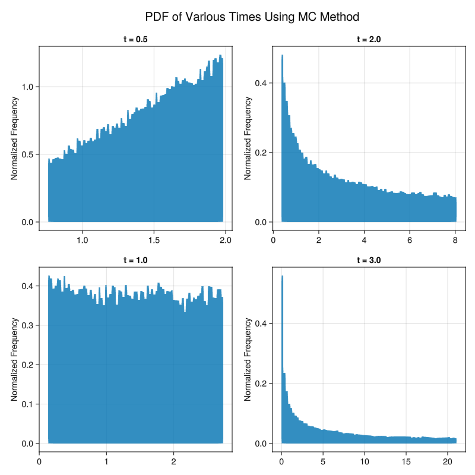
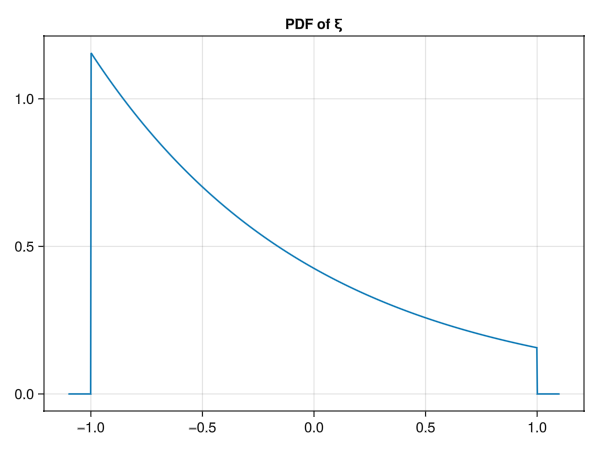

Use the Stieltjes algorithm to compute the sixth-order generalized polynomial choas basis \[\{P_0(x), P_1(x), ..., P_6(x)\}\] for \(\xi\), i.e. a set of polynomials up to degree 6 that are orthogonal relative to the PDF \(\xi\) given in \(\eqref{eq-pxi}\).
Solution
We know that since the distribution function \(\eqref{eq-pxi}\) is compactly supported, that the solution to the moment problem is unique and exists.
Let \(c = \frac{1}{e-e^{-1}}\) the constant in \(p_{\xi}(x)\)
Following the Stieltjes algorithm, let us compute the first orthogonal polynomial and then we will write a code that computes the first six orthogonal polynomials where \[\begin{align}
\mu(x) = ce^{-x}
\end{align}\]
Validation of the stieltjes algorthim: Plot of numerical over analytical solution of the first orthogonal polynomial
Part B
Veriy that the polynomial basis you obtained in part a is orthogonal, i.e., that the matrix
\[\begin{equation}\label{polybasis}
\mathbb{E}\{P_k(\xi)P_j(\xi)\} = \int_{-1}^{1} P_k(x)P_j(x)dx
\end{equation}\] is diagonal.
Solution
Let us write a code that computes the Matrix and then plot the matrix using a heatmap to check if it diagonal.
Code
functionisdiagonal(π::Vector{Function}, sup::SVector{2}) A =Matrix{Float64}(undef, 7, 7)for idx inCartesianIndices(A) (k, j) = idx.I ele =integ(x->π[k+1](x) *π[j+1](x) *μ(x), sup) A[k, j] = ele <1e-12 ? 1e-8: eleend fig =Figure() ax =Axis(fig[1, 1], title ="heatmap of the diagona matrix")heatmap!(ax, log10.(A)) ax.yreversed=truesave("heatmapdiagonal.png", fig)endisdiagonal(π, sup)

Heatmap showing that the matrix of innerproducts with respect to the weight function of all polynomials generated is diagonal.
Clearly we can see that the matrix is diagonal and thus the polynomial functions are orthogonal with respect to the weight function.
Part C
Plot \(P_k(x)\) for \(k = 0, ..., 6\)
Solution
Let us define a code that plots all polynomials \(P_k(x)\) for \(k = 0, ..., 6\)
Code
functionplotpolynomials(π::Vector{Function}) M =size(π)[1] fig =Figure();display(fig) ax =Axis(fig[1, 1], title ="Plot of the set of orthogonal polynomials up to degree 6") xs =LinRange(-1.0, 1.0, 1000)for n in1:M-1lines!(ax, xs, π[n+1].(xs), label="π_$(n-1)")endLegend(fig[1, 2], ax)save("plotpolynomials.png", fig)endplotpolynomials(π)

Plot of polynomials within the support [-1, 1]
Question 2
Consider the following nonlinear fuction of the random variable \(\xi(\omega)\) with PDF defined in \(\eqref{eq-pxi}\)
Compute the PDF of \(\eta\) using the relative frequency approach. To this end, sample 50,000 realizations of \(\xi\) using the inverse CDF approach applied to \(\eqref{eq-pxi}\), and use such samples to compute samples of \(\eta(\omega)\).
Solution
The following code samples from \(\eqref{eq-pxi}\) 50,000 times using the inverse sampling method previously applied in Homework 1 and 2, then applies the transformation \(\eqref{eta}\), and finally plots the histogram with 80 bins, normalized so that the PDF integrates to one over the support.
Code
η(ξ) = (ξ -1) / (2+sin(2*ξ))functionquestion2a() r =LinRange(-1, 1, 1000) fig =Figure();display(fig) ax =Axis(fig[1, 1], title ="PDF of η(ξ(ω))") ys =cumsumtrap(μ, r) samples =Vector{Float64}(undef, 50000)for i ineachindex(samples) samples[i] =η(sampleInverseCDF(rand(), hcat(ys, r)))endhist!(ax, samples, bins =80, normalization =:pdf)save("question2a.png", fig) samplesendsamples =question2a();

PDF of \(\eta(\xi(\omega))\) by sampling 50,000 times via inverse CDF approach and applying the transformation \(\eqref{eta}\)
converges to \(\eta(\omega)\) in distribution as \(M\) increases. To this end, plot the PDF of the random variables \(\eta_M(\xi(\omega))\) for \(M = 1, 2, 4, 6\) using method of relative frequencies and compare such PDF’s with the PDF of \(\eta\) you computed in part a.
Solution
Code
functionquestion2b(πn::Vector{Function}) a =Vector{Float64}(undef, 7) colors =Symbol[:red, :green, :blue, :yellow, :orange, :purple]# calculate coefficientsfor k ineachindex(a) a[k] =integ(x ->η(x) * πn[k+1](x) *μ(x), sup) /integ(x -> πn[k+1](x) * πn[k+1](x) *μ(x), sup)end fig =Figure();display(fig) ax =Axis(fig[1, 1], title="densities of ηM(ξ(ω)) for M = {1, 2, 4, 6}") r =LinRange(-1, 1, 1000) ys =hcat(cumsumtrap(μ, r), r)for M inSVector{4}(1, 2, 4, 6) ηM_samples =Vector{Float64}(undef, 50000)for l ineachindex(ηM_samples) η_sum =0.0 ξ =sampleInverseCDF(rand(), ys)for k in1:M+1 η_sum+=a[k]*πn[k+1](ξ)end ηM_samples[l] = η_sumenddensity!(ax, ηM_samples, color = (colors[M], 0.3), label ="M = $M", strokecolor = colors[M], strokewidth =3, strokearound =true) endLegend(fig[1, 2], ax)save("question2b.png", fig)endquestion2b(π);

The PDF ploted using Kernel Density Estimation for values M = {1, 2, 4, 6}
As we can see, the PDF of the random variable \(\eta_M(\omega)\) converges to the PDF of \(\eta(\omega)\) as M increases.
Part C
Compute the mean and variance of \(\eta_6\) and compare it with the mean and variance of \(\eta\). Note that such means and variances can be computed in multiple ways, e.g., by using MC, or by approximating the integral defining the moments of the random variable \(\eta\) using quadrature, e.g., via the trapezoidal rule applied to the integral
Let us find the mean and variance of \(\eta\) and \(\eta_6\) by generating 1000 samples of size 1000 and taking the average of the mean and variance for each sample.
Code
functionquestion2c() r =LinRange(-1, 1, 1000) ys =hcat(cumsumtrap(μ, r), r) η_samples =Vector{Float64}(undef, 50000)for i ineachindex(η_samples) η_samples[i] =η(sampleInverseCDF(rand(), ys))end a =Vector{Float64}(undef, 7)for k ineachindex(a) a[k] =integ(x ->η(x) * πn[k+1](x) *μ(x), sup) /integ(x -> πn[k+1](x) * πn[k+1](x) *μ(x), sup)end η6_samples =Vector{Float64}(undef, 50000)for l ineachindex(η6_samples) η_sum =0.0 ξ =sampleInverseCDF(rand(), ys)for k ineachindex(a) η_sum+=a[k]*πn[k+1](ξ)end η6_samples[l] = η_sumend means =Vector{Float64}(undef, 1000) variances =Vector{Float64}(undef, 1000)for i ineachindex(means) sample =rand(η_samples, 1000) means[i] =mean(sample) variances[i] =var(sample)end η_mean =mean(means) η_var =mean(variances) means =Vector{Float64}(undef, 1000) variances =Vector{Float64}(undef, 1000)for i ineachindex(means) sample =rand(η6_samples, 1000) means[i] =mean(sample) variances[i] =var(sample)end η6_mean =mean(means) η6_var =mean(variances) fig =Figure();display(fig) ax =Axis(fig[1, 1], xticks = (1:2, ["η", "η₆"]), title ="mean and variance for η and η_6")barplot!(ax, [1, 1, 2, 2], [η_mean, η_var, η6_mean, η6_var], dodge = [1, 2, 1, 2], color = [1, 2, 1, 2])save("question2c.png", fig)endquestion2c();

Barplot of the bootstrap mean and variance from MC for \(\eta\) and \(\eta_6\)
From the plot we can see the the sample mean and variance for both are almost identical.
Question 3
Compute the solution of the following random initial value problem
using the stocastic Galerkin method with the gPC basis you obtained in question 1. In particular, use the following gPC expansion of degree 6 for the solution of \(\eqref{randomivp}\).
where the gPC modes \(\hat{x}_k(t)\) are to be determined from \(\eqref{randomivp}\).
Part A
Compute the mean and the variance of \(\eqref{eight}\) of \(t \in [0, 3]\).
Solution
Let us find the solution of the random initial value problem by using the stocastic Galerkin method and finding the gPC modes by plugging in \(\eqref{eight}\) into \(\eqref{randomivp}\).
In the following code we precompute the expectations required for defining the first order system of equations, solve the IVP using Tsitouras 5/4 Runge-Kutta method, calculate the variance by the following:
and plot the mean and variance on two seperate graphs in the temporal domain [0, 3]
Code
usingDifferentialEquationsfunctionquestion3a()# get polynomials πn =stieltjes()# simulation initial and final time t0, tf =SVector{2}(0.0, 3.0)# initial conditions u0 =SVector{7}(1, 0, 0, 0, 0, 0, 0)# highest polynomial order M =size(πn)[1]# precompute E{Pj} Epj1 =Vector{Float64}(undef, M)for k ineachindex(πn) Epj1[k] =integ(x -> πn[k](x) *μ(x), sup)end# precompute E{Pj^2} Epj2 =Vector{Float64}(undef, M)for j ineachindex(πn) Epj2[j] =integ(x -> πn[j](x) * πn[j](x) *μ(x), sup)end# precompute E{P₁PkPj} Ep1pjpk =Matrix{Float64}(undef, M, M)for idx inCartesianIndices(Ep1pjpk) (j, k) = idx.I Ep1pjpk[j, k] =integ(x -> πn[2](x) * πn[j](x) * πn[k](x) *μ(x), sup)end# precompute the constant multiplying xhatj β = (2.0/ (exp(1.0)^2+1.0))# define the system of odesfunctionode(u, p, t)returnSVector{M}( ((-sum(u[k] * Ep1pjpk[j, k] for k in1:M))/Epj2[j]) + β*u[j] + (cos(4*t)*Epj1[j]/Epj2[j]) for j in1:M )end# solve the ode problem using Tsitouras 5/4 Runge-Kutta method prob =ODEProblem(ode, u0, (t0, tf)) sol =solve(prob, Tsit5(), saveat=0.01, abstol=1e-8, reltol=1e-8)# find the variance var =sum([(sol[k, :].^2) .* Epj2[k] for k in2:M], dims=1)[1]# plot the mean and variance fig =Figure(size = (800, 400));display(fig) ax1 =Axis(fig[1, 1], title ="mean of x(t;ω)", xlabel ="time") ax2 =Axis(fig[1, 2], title ="variance of x(t;ω)", xlabel ="time") lines!(ax1, sol.t, sol[1, :])lines!(ax2, sol.t, var)save("question3a.png", fig)endquestion3a();

The mean and variance of \(\eqref{eight}\) in \(t \in [0, 3]\)
Part B
Compute the PDF of \(\eqref{eight}\) at times \(\{0.5, 1, 2, 3\}\) (use relative frequencies).
Note: you can debug your gPC results by either computing the analytic solution of \(\eqref{randomivp}\) and then computing moments/PDFs of such solutions as a function of \(t\), or by randomly sampling many solution paths of \(\eqref{randomivp}\) and then computing ensemble averages.
Solution
We have everything we need to compute the PDF of \(\eqref{eight}\) for various times.
Let us generate a random vector by sampling \(p_{\xi}(x)\) 50,000 times, then generate samples by evaluating the following:
\[\begin{align}
&\hat{x}_i(t^*) &\quad &\text{are the gPC coefficients at time } t^* \\
&P_i(\xi) &\quad &\text{are the gPC basis functions} \\
&\xi &\quad &\text{random variables from the distribution } P_{\xi}(x)
\end{align}\]
Code
functionquestion3b()# get orthogonal polynomials πn =stieltjes()# get gPC modes sol =question3a()# generate samples of ξ r =LinRange(-1, 1, 1000) ys =hcat(cumsumtrap(μ, r), r) ξ_samples =Vector{Float64}(undef, 50000)for i ineachindex(ξ_samples) ξ_samples[i] =sampleInverseCDF(rand(), ys)end# define t* times =SVector{4}(0.5, 1.0, 2.0, 3.0)# number of solutions (gPC modes) M =size(sol)[1]# define figure fig =Figure(size = (800, 800)) ax =SVector{4}(Axis(fig[1, 1]), Axis(fig[1, 2]), Axis(fig[2, 1]), Axis(fig[2, 2]))# plot histogram of samples of x(tstar;ω)for (i, tstar) inenumerate(times)hist!(ax[i], sum(sol(tstar)[j] .* πn[j].(ξ_samples) for j in1:M), bins =80, normalization =:pdf) ax[i].title ="t = $tstar" ax[i].ylabel ="normalized frequency"endLabel(fig[0, :], "PDF of various times, for x(t;ω)", fontsize=20)save("question3b.png", fig)endquestion3b();

PDF for various times found by the method of relative frequencies
Appendix
Validation
Let us randomly sample many solution paths of \(\eqref{randomivp}\) and then compute the ensemble average to validate our gPC results.
For this we will generate 50,000 samples from the PDF of \(\eqref{eq-pxi}\), then solve the ODE numerically 50,000 times and plot the histogram of the normalized frequency just as we did in Question 3 partb.
Code
functionvalidation(N::Int64)# generate samples of ξ r =LinRange(-1, 1, 1000) ys =hcat(cumsumtrap(μ, r), r) ξ_samples =Vector{Float64}(undef, N)for i ineachindex(ξ_samples) ξ_samples[i] =sampleInverseCDF(rand(), ys)end# define t* times =SVector{4}(0.5, 1.0, 2.0, 3.0)# define the ODEProblemfunctionode(u, p, t)returnSVector{1}(-p * u[1] +cos(4*t))end# initial condition u0 =SVector{1}(1)# solve once to get size of time vector prob =ODEProblem(ode, u0, (0.0, 3.0), -1.0) sol =solve(prob, Tsit5(), saveat=0.01, abstol=1e-8, reltol=1e-8)# init matrix to store solutions solTstar = [Float64[] for _ in1:length(times)] solutions =Matrix{Float64}(undef, N, size(sol.t)[1])# solve the ode for each sample and extract sample pathsfor (i, ξ) inenumerate(ξ_samples) prob =ODEProblem(ode, u0, (0.0, 3.0), ξ) sol =solve(prob, Tsit5(), saveat=0.01, abstol=1e-8, reltol=1e-8) solutions[i, :] =Float64[u[1] for u in sol.u]for (j, tstar) inenumerate(times)push!(solTstar[j], sol(tstar)[1])endend# calculate sample path mean and variance meanPath =mean(solutions, dims=1) variancePath =var(solutions, mean=meanPath, dims=1)# plot results fig1 =Figure(size = (800, 800)) ax1 = [Axis(fig1[i, j]) for i in1:2, j in1:2] fig2 =Figure(size = (800, 400)) ax2 = [Axis(fig2[1, i]) for i in1:2]for (i, tstar) inenumerate(times)hist!(ax1[i], solTstar[i], bins =80, normalization =:pdf) ax1[i].title ="t = $tstar" ax1[i].ylabel ="Normalized Frequency"endLabel(fig1[0, :], "PDF of Various Times Using MC Method", fontsize=20)lines!(ax2[1], sol.t, vec(meanPath), label="Mean Path") ax2[1].title ="Mean Path" ax2[1].xlabel ="Time"lines!(ax2[2], sol.t, vec(variancePath), label="Variance") ax2[2].title ="Variance over Time" ax2[2].xlabel ="Time"save("validationPDF.png", fig1)save("validationmeanvar.png", fig2)endvalidation(50000);

The mean and variance of \(x(t;\omega)\) using Monte Carlo method

The PDF for specific times using Monte Carlo method
Figures

Figure 1: The PDF of \(\xi\)
Footnotes
Note that \(\mathbb{E}\{\eta(\xi(\omega))P_k(\xi(\omega))\}\) can be computed with MC, or with quadrature as \[\begin{equation}\label{four}\mathbb{E}\{\eta(\xi(\omega))P_k(\xi(\omega))\}= \int_{-1}^{1}\frac{x - 1}{2 + 1 \sin(2x)}P_k(x)P_\xi(x)dx\end{equation}\]↩︎
![]()